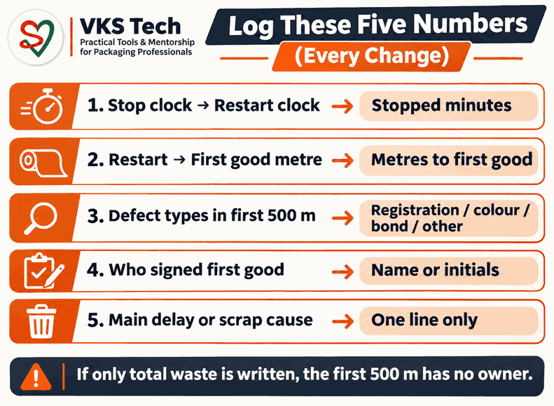
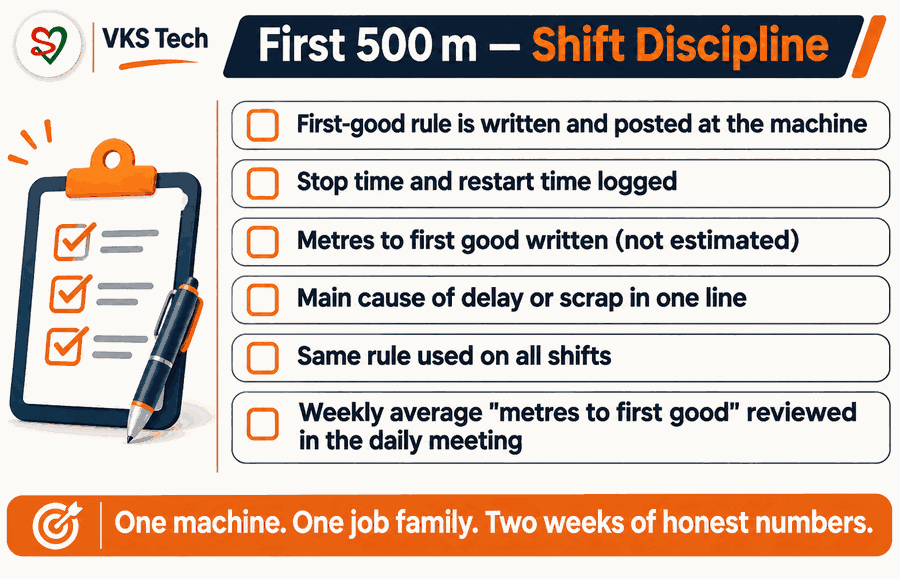
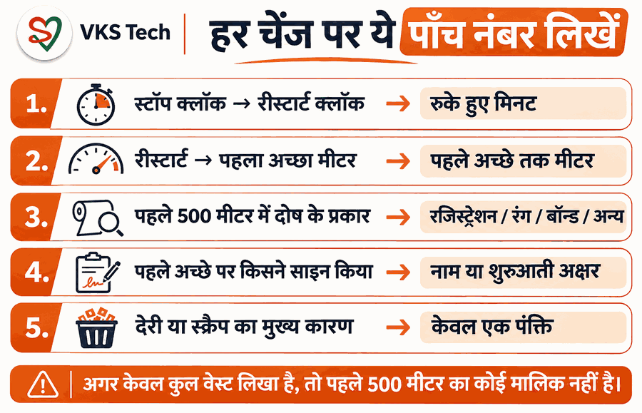

📏 What to Measure in the First 500 Metres After a Job Change
📖 8-min read | Plant Operations | Practical, numbers-first
On a typical multi-job converting line, the machine may restart in 25 minutes — and still burn 600–1,200 metres before the first sellable metre. That stretch is not “normal startup noise”. It is running waste, and it has a clear owner only when you measure it.
Blog 102 separated make-ready into stopped time and running waste. This post zooms into the second half: the first metres after the web is moving again. Until “first good” is a number on a sheet, startup scrap stays a feeling in the meeting.
Why the First 500 Metres Matter
After a job change the line is “running”, so availability looks fine. Quality and performance take the hit: registration still hunting, colour not locked, bond or coat weight settling, seal window not confirmed. Those metres are often mixed into general waste. Nobody owns them.
Five hundred metres is a practical window — long enough to see real defects, short enough to review every change without a project. On a fast press it is a few minutes; on a careful laminator or metalliser it is longer. The number is a discipline tool, not a universal standard.
What to Log Every Change

- Stopped minutes — Clock when the machine stopped for the change and when it restarted. (This links back to make-ready stopped time.)
- Metres to first good — Counter at restart vs counter when first good is declared. Not “about 400”. The actual difference.
- Defect types in the first 500 m — One tick: registration / colour / bond / OD or seal / other. Multiple allowed if needed.
- Who signed first good — Initials or name. Same person who would stand by the roll if the customer asks.
- Main cause in one line — Waiting for film, registration hard, colour match, unclear first-good rule, etc.
If the log only shows total waste for the shift, the first 500 m has no owner. Split it out and the conversation changes in one week.
Write the First-Good Rule (5 Lines Max)
Without a written rule, every operator has a different “good enough”. Post a short standard at the machine for the job family you are improving:
- Registration within agreed limit
- Colour matched to approved standard / last good
- Bond or coat weight in range (if measured this job)
- No visible defects on sample
- Signed by named role (operator / lead / QA as you define)
Keep it to five lines. Long SOPs are ignored at 2 a.m. A short rule that all shifts use the same way is worth more than a perfect document that only day shift follows.
Two-Week Discipline Checklist

- First-good rule written and posted at the machine
- Stop time and restart time logged every change
- Metres to first good written (not estimated)
- Main cause of delay or scrap in one line
- Same rule used on all shifts
- Weekly average “metres to first good” reviewed in the daily meeting — one line on the board
Start with one machine and one job family. Two weeks of honest numbers beat a plant-wide form that nobody fills.
What Good Looks Like After 30 Days
- You can state last week’s average metres to first good for that machine
- Top defect type in the first 500 m is named and has one action owner
- First-good rule is the same on night shift as on day shift
- Running waste is discussed as its own number, not only total scrap %
Then expand to the next job family. Spreading the log to every machine on day one usually produces empty rows, not better averages.
How This Links to Make-Ready and the Daily Meeting
Make-ready (Blog 102) asked you to measure stopped time and running waste. The first 500 m is how you measure the running-waste half with a fixed window.
Daily meeting (Blog 94) should not debate feelings. One line is enough: “Machine 3 — average metres to first good this week: 720 (was 1,100). Top cause: registration.” That is a decision-ready fact.
Skill and coverage still matter. If only one person can lock registration on a structure, the first 500 m will stay long when that person is off. That is a roster and competence issue, not a machine issue — fix the coverage, then re-measure the metres.
Key Takeaway
📏 जॉब चेंज के बाद पहले 500 मीटर में क्या मापें
📖 9-min read | प्लांट ऑपरेशन्स | व्यावहारिक, नंबर-फर्स्ट
एक सामान्य मल्टी-जॉब कन्वर्टिंग लाइन पर मशीन 25 मिनट में रीस्टार्ट हो सकती है — और फिर भी पहले बिकने लायक मीटर से पहले 600–1,200 मीटर जला सकती है। वह हिस्सा “सामान्य स्टार्टअप शोर” नहीं है। वह रनिंग वेस्ट है, और जब तक आप इसे मापते नहीं, उसका कोई साफ मालिक नहीं होता।
ब्लॉग 102 ने मेक-रेडी को रुके हुए समय और रनिंग वेस्ट में बाँटा। यह पोस्ट दूसरे हिस्से पर ज़ूम करता है: वेब फिर चलने के बाद के पहले मीटर। जब तक “फर्स्ट गुड” शीट पर एक नंबर नहीं है, स्टार्टअप स्क्रैप मीटिंग में केवल अहसास रहता है।
पहले 500 मीटर क्यों मायने रखते हैं
जॉब चेंज के बाद लाइन “चल रही” होती है, इसलिए अवेलेबिलिटी ठीक दिखती है। क्वालिटी और परफॉर्मेंस चोट खाते हैं: रजिस्ट्रेशन अभी हंट हो रहा, रंग लॉक नहीं, बॉन्ड या कोट वेट सेटल हो रहा, सील विंडो कन्फर्म नहीं। ये मीटर अक्सर सामान्य वेस्ट में मिल जाते हैं। कोई उनका मालिक नहीं होता।
पाँच सौ मीटर एक व्यावहारिक खिड़की है — असली डिफेक्ट दिखाने के लिए काफी, हर चेंज रिव्यू के लिए छोटी। तेज़ प्रेस पर कुछ मिनट; सावधान लैमिनेटर या मेटलाइज़र पर लंबा। नंबर डिसिप्लिन का औज़ार है, सार्वभौमिक स्टैंडर्ड नहीं।
हर चेंज पर क्या लॉग करें

- रुके मिनट — मशीन कब रुकी और कब रीस्टार्ट हुई।
- फर्स्ट गुड तक मीटर — रीस्टार्ट पर काउंटर बनाम फर्स्ट गुड पर काउंटर। “लगभग 400” नहीं — असली अंतर।
- पहले 500 मी में डिफेक्ट प्रकार — रजिस्ट्रेशन / रंग / बॉन्ड / OD या सील / अन्य।
- फर्स्ट गुड किसने साइन किया — इनिशियल या नाम।
- मुख्य वजह एक लाइन में — फिल्म का इंतजार, रजिस्ट्रेशन कठिन, रंग मैच, अस्पष्ट फर्स्ट-गुड नियम, आदि।
अगर लॉग में केवल शिफ्ट का कुल वेस्ट है, तो पहले 500 मीटर का कोई मालिक नहीं। अलग लिखेंगे तो एक हफ्ते में बात बदल जाती है।
फर्स्ट-गुड नियम लिखें (अधिकतम 5 लाइन)
बिना लिखे नियम के हर ऑपरेटर का “काफी अच्छा” अलग होता है। जिस जॉब फैमिली को सुधार रहे हैं, मशीन पर छोटा स्टैंडर्ड चिपकाएँ:
- रजिस्ट्रेशन सहमत सीमा में
- रंग अप्रूव्ड स्टैंडर्ड / लास्ट गुड से मैच
- बॉन्ड या कोट वेट रेंज में (अगर इस जॉब पर मापा जाता है)
- सैंपल पर कोई विज़िबल डिफेक्ट नहीं
- नामित रोल द्वारा साइन (ऑपरेटर / लीड / QA — जैसा आप तय करें)
पाँच लाइन रखें। लंबी SOP रात 2 बजे नज़रअंदाज़ हो जाती है। छोटा नियम जो सभी शिफ्ट एक जैसा इस्तेमाल करें, परफेक्ट दस्तावेज़ से ज़्यादा क़ीमती है।
दो-सप्ताह डिसिप्लिन चेकलिस्ट
- फर्स्ट-गुड नियम लिखा और मशीन पर लगा है
- हर चेंज पर स्टॉप और रीस्टार्ट समय लॉग
- फर्स्ट गुड तक मीटर लिखा (अनुमान नहीं)
- देरी या स्क्रैप की मुख्य वजह एक लाइन
- सभी शिफ्ट एक ही नियम
- साप्ताहिक औसत “फर्स्ट गुड तक मीटर” डेली मीटिंग में — बोर्ड पर एक लाइन
एक मशीन और एक जॉब फैमिली से शुरू करें। दो हफ्ते के ईमानदार नंबर उस प्लांट-व्यापी फॉर्म से बेहतर हैं जो कोई भरता नहीं।
30 दिनों बाद अच्छा कैसा दिखता है
- आप उस मशीन का पिछले सप्ताह का औसत “फर्स्ट गुड तक मीटर” बता सकते हैं
- पहले 500 मी में टॉप डिफेक्ट प्रकार नामित है और एक एक्शन ओनर है
- नाइट शिफ्ट पर फर्स्ट-गुड नियम दिन जितना ही है
- रनिंग वेस्ट अपनी संख्या के रूप में चर्चा होती है, केवल कुल स्क्रैप % नहीं